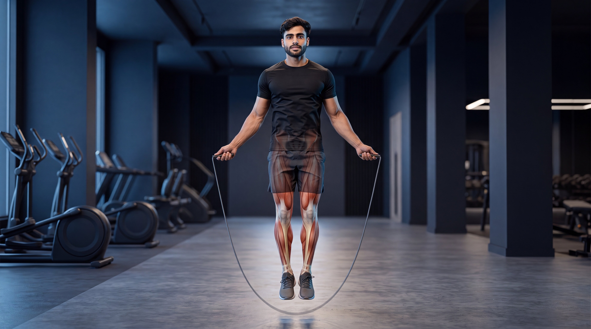
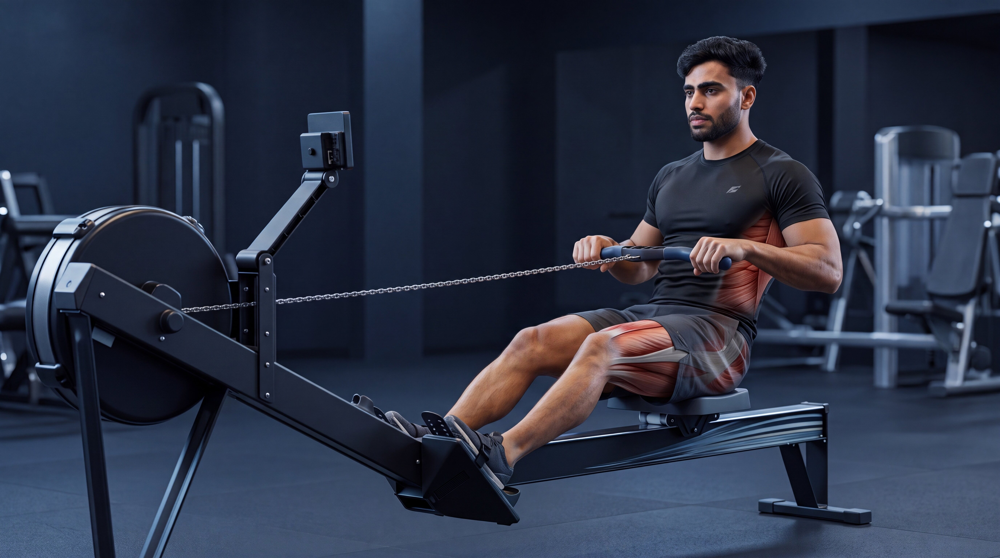

Beginner
Beginner
Treadmill Running
Build cardiovascular endurance through controlled treadmill running while developing consistent pacing, efficient mechanics, and sustainable conditioning.
View ExerciseExplore step-by-step cardio exercise guides designed to help you master proper technique, improve endurance, develop conditioning, avoid common mistakes, and train with greater confidence.
Explore our cardio exercise library and learn proper technique, movement mechanics, common mistakes, and practical coaching tips for every exercise.
Beginner
Build cardiovascular endurance through controlled treadmill running while developing consistent pacing, efficient mechanics, and sustainable conditioning.
View Exercise Beginner
Beginner
Improve cardiovascular fitness with low-impact cycling while challenging the legs through smooth, controlled, and repeatable pedaling.
View Exercise Beginner
Beginner
Raise your heart rate through coordinated full-body movement while developing rhythm, endurance, and dynamic body control.
View Exercise Intermediate
Intermediate
Develop cardiovascular endurance, rhythm, footwork, and coordination through controlled and consistent rope rotations.
View Exercise Intermediate
Intermediate
Challenge full-body conditioning by combining controlled floor movement, rapid transitions, and dynamic athletic effort.
View Exercise Beginner
Beginner
Increase heart rate and develop dynamic coordination through alternating knee drives performed with controlled rhythm and upright posture.
View Exercise Intermediate
Intermediate
Build full-body cardiovascular endurance through coordinated leg drive, torso control, and powerful pulling mechanics.
View Exercise Intermediate
Intermediate
Develop cardiovascular endurance and lower-body conditioning through continuous controlled stepping at a sustainable training pace.
View ExerciseDifferent cardio exercises develop different qualities. Choose your movement based on whether you want to improve cardiovascular endurance, increase training intensity, develop coordination and rhythm, or build complete full-body conditioning.
Develop lasting cardiovascular fitness through continuous, controlled exercise that challenges your aerobic capacity, improves stamina, and supports sustained physical performance.
Challenge your cardiovascular system through dynamic bodyweight movements that rapidly elevate heart rate, demand full-body effort, and improve overall work capacity.
Develop timing, footwork, balance, and movement efficiency through rhythmic cardio exercises that challenge the body to coordinate multiple movement patterns with control.
Build sustained conditioning through machine-based exercises that challenge cardiovascular fitness while demanding continuous effort from major muscle groups across the body.
Go beyond the surface. Explore cinematic anatomy videos that reveal how your heart, lungs, muscles, joints, and movement mechanics work together during cardiovascular exercise.
Watch what happens beneath the skin as the heart, lungs, legs, and core work together to sustain every controlled stride during treadmill running.
See how the heart and lungs respond as oxygen demand increases during sustained running.
Understand how the hips, knees, ankles, and muscles of the lower body coordinate through every stride.
Connect anatomy with better posture, efficient pacing, controlled foot contact, and sustainable running mechanics.
Select an exercise to explore its cinematic under-the-skin breakdown.
 Hindi
Hindi

Hindi
HindiBetter cardio training is not only about moving faster or pushing harder. Exercise selection, training intensity, movement efficiency, and gradual progression all shape long-term endurance and cardiovascular fitness.
Build your endurance gradually. Then make every session more controlled, efficient, and purposeful.
Different cardio exercises develop different qualities. Running, cycling, rowing, jumping, and climbing can improve endurance, coordination, work capacity, and full-body conditioning in different ways.
Not every cardio session needs maximum effort. Adjust your pace, resistance, duration, and recovery according to your fitness level, training goal, and ability to maintain controlled technique.
Improve gradually by increasing duration, pace, resistance, distance, or training frequency over time. Sustainable progression builds endurance without sacrificing movement quality or recovery.
Efficient cardio combines controlled technique, steady breathing, balanced posture, and sustainable rhythm. Better movement quality helps you train effectively while managing unnecessary fatigue.
Get clear, practical answers to common questions about cardio exercises, training frequency, workout duration, intensity, exercise selection, and cardiovascular fitness.
The right amount depends on your fitness level, training goal, exercise intensity, and recovery. Beginners may start with shorter, manageable sessions and gradually increase duration as cardiovascular fitness and movement confidence improve.
Cardio frequency depends on your goals, training intensity, exercise type, weekly activity, and ability to recover. Some people perform cardio several times per week, while others combine fewer dedicated sessions with strength training and general daily movement.
There is no single best cardio exercise for every beginner. Treadmill walking or running, stationary cycling, and other controlled cardio movements can all be useful depending on your fitness level, coordination, comfort, available equipment, and personal preference.
Neither approach is automatically better for everyone. Steady-state cardio can support endurance through sustained effort, while higher-intensity training can challenge work capacity in shorter sessions. The best approach depends on your goals, experience, recovery, preferences, and overall training plan.
The order can depend on your primary training goal. If strength performance is the priority, many people prefer strength training before demanding cardio. If cardiovascular performance is the main goal, cardio may come first. Light cardio can also be used as part of a general warm-up.
Cardio can increase energy expenditure and support a fat-loss plan, but fat loss is also influenced by overall energy balance, nutrition, daily activity, training habits, sleep, and individual factors. Cardio alone does not guarantee a specific fat-loss result.
Training needs vary between individuals. Choose cardio exercises, training intensity, workout duration, and progression that match your experience, goals, recovery, and comfort.
Complete fitness goes beyond a single training style. Explore every exercise category, master better movement, and keep building your strength, endurance, knowledge, and confidence one exercise at a time.